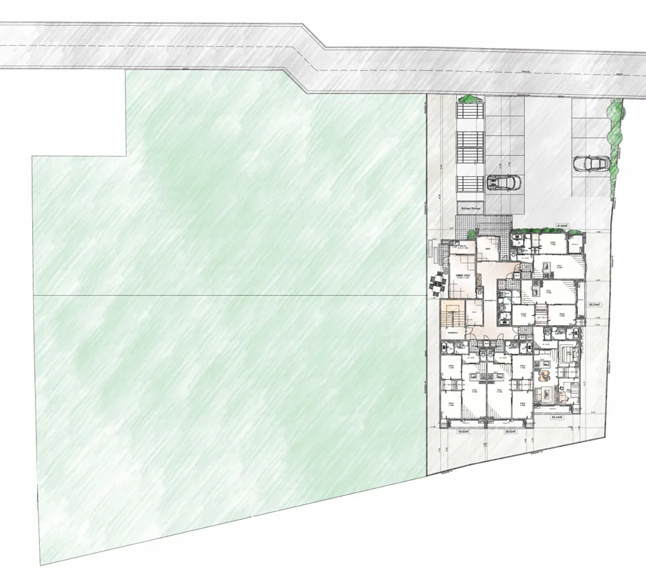
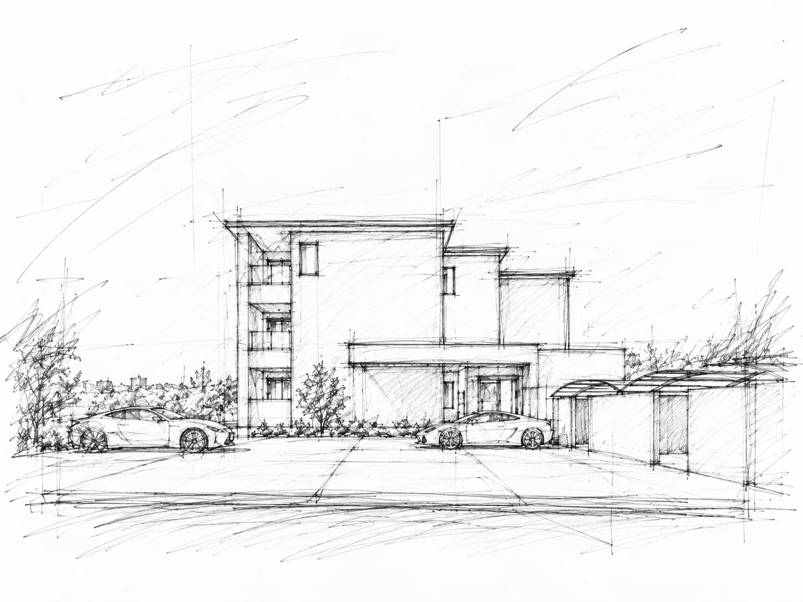
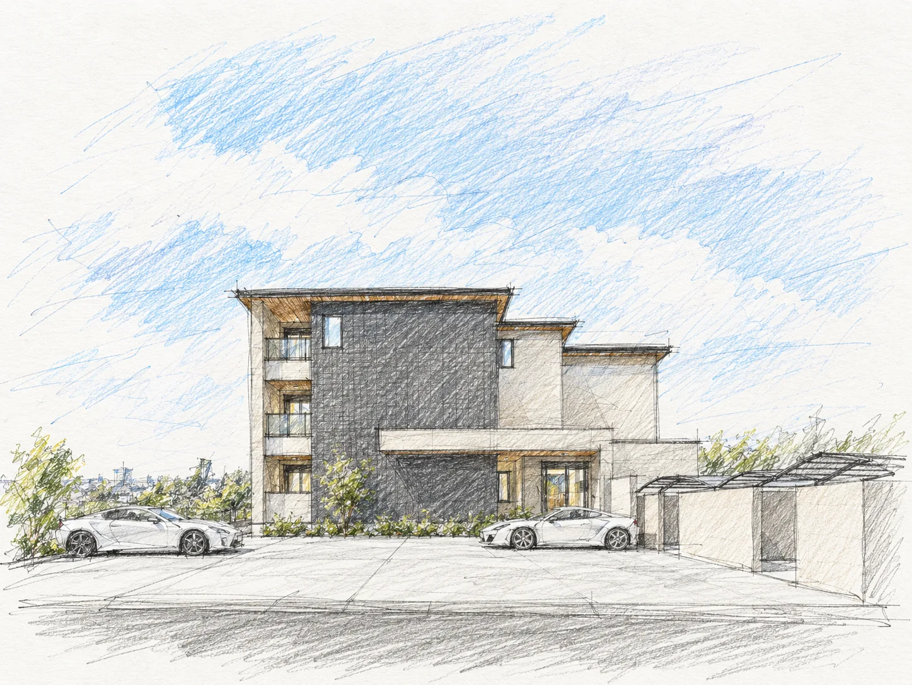
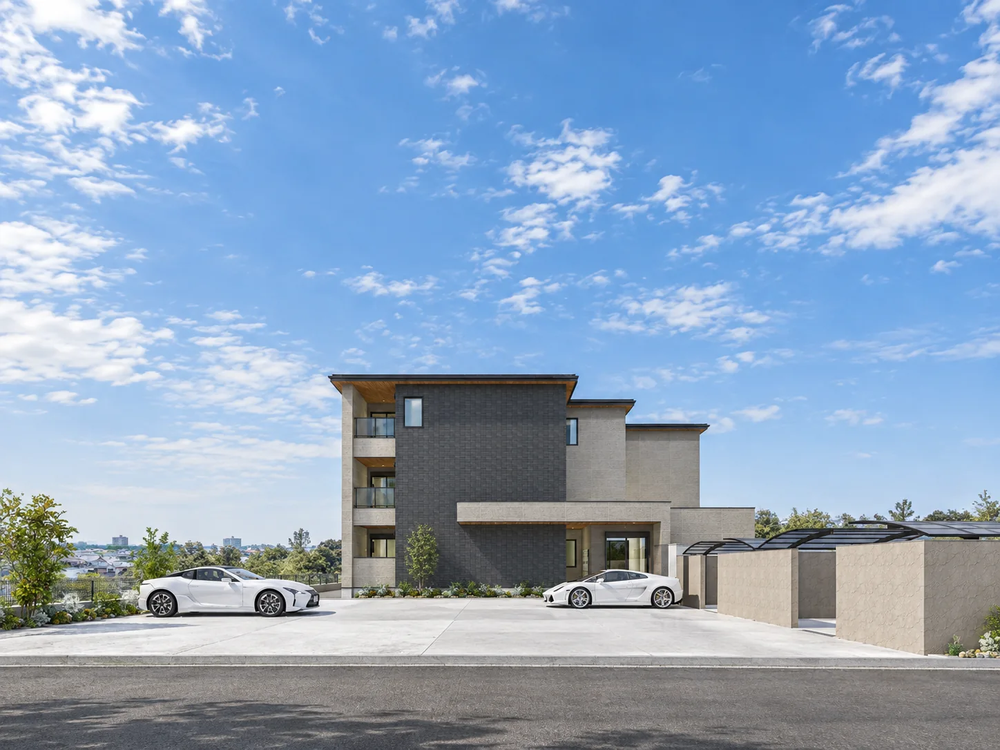
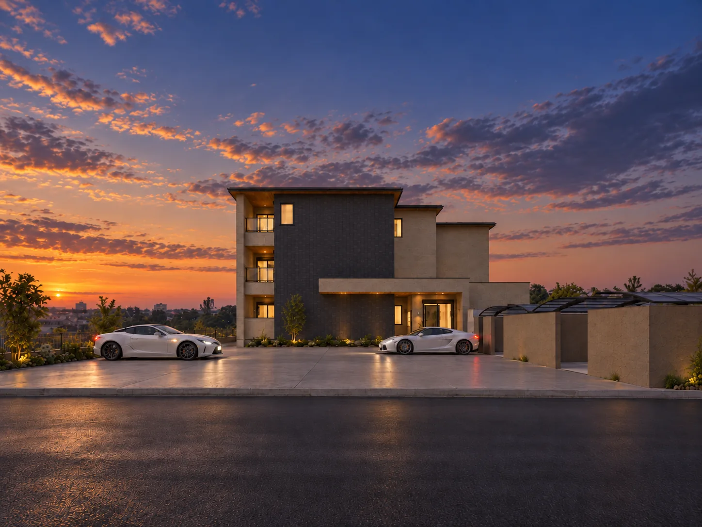
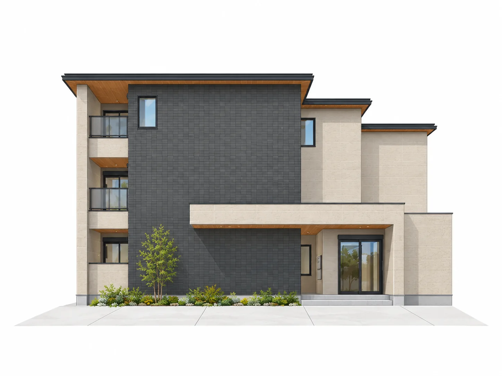
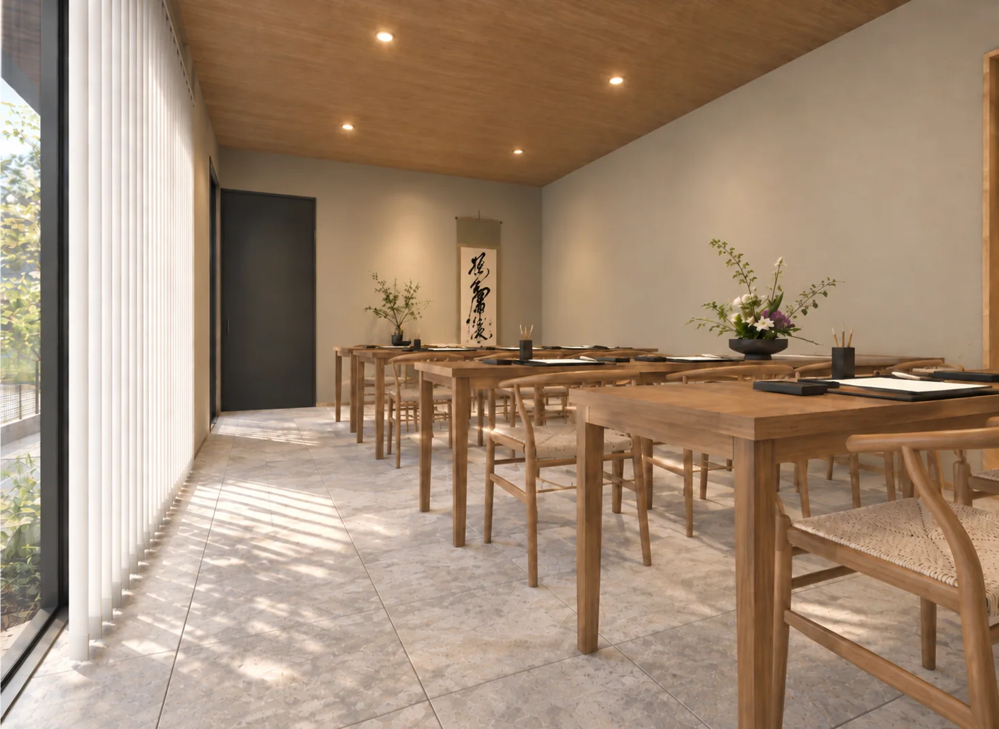
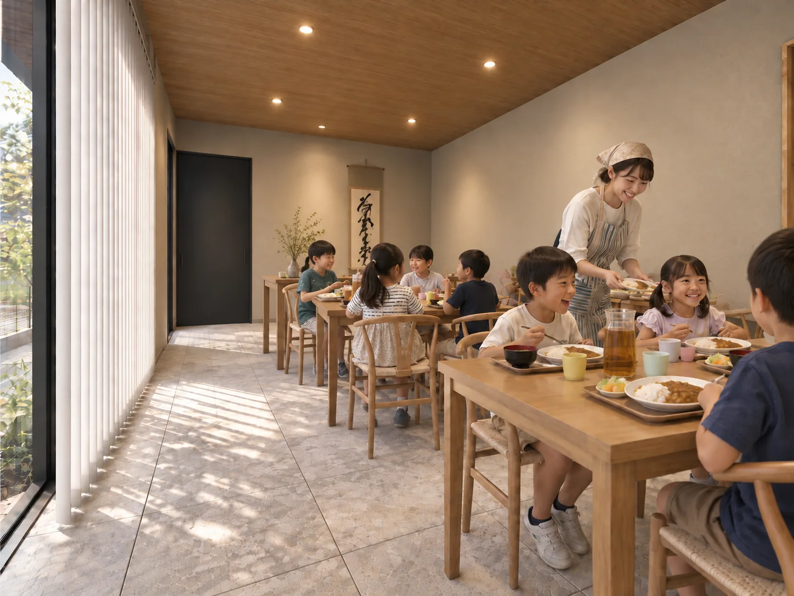
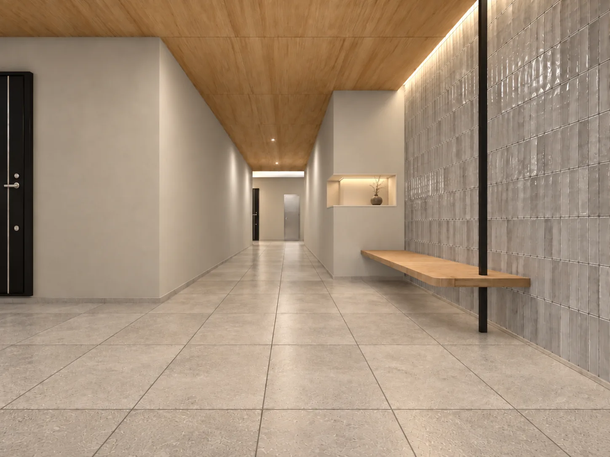

ほどく。
道路・駐車場・生産緑地。土地全体の条件を読み解き、それぞれの役割を整理する。
UZUMASA YASUI NIJO URACHO
土地の時間を、これからの暮らしへ。
UZUMASA YASUI NIJO URACHO / LAND & LIFE PROJECT
土地の今と、その先へ。
資産を守り、暮らしを育てる計画。
THE CENTRAL IDEA
3,000㎡を超える所有地。生産緑地、月極駐車場、そして新しく建てる共同住宅。
今すべてを完成させるのではなく、必要な場所に、今必要な役割を与える。その一方で、残された土地には、将来の選択肢を残しておく。
未来を決めきるのではなく、道路・駐車場・生産緑地。土地全体の条件を読み解き、それぞれの役割を整理する。
建築を最大化せず、今の収益を守りながら、残地と農地に将来の余地を残す。
賃貸住宅から農園、文化体験、地域の食卓へ。そして大切な資産を次の世代へ。
01 / LAND & TIME
敷地最奥部に木造3階建15戸。
残地の活用は、次の時代に選べる状態へ。

生産緑地、月極駐車場。土地ごとに今の役割がある。
15戸の賃貸住宅を計画。土地全体を一度に固定しない。
駐車場の継続や次の土地活用を、将来の判断に託す。
市場・家族・税制の変化に応じて選べる状態を守る。
02 / ARCHITECTURE
黒と白の面構成、水平ライン、木調軒天。建築の佇まいから、日々の暮らしの質を考える。

01 / STUDY
02 / DESIGN
03 / ARCHITECTURE

03 / THE CONNECTIONS
共同住宅を中心に、農園、京都文化体験、子ども食堂。それぞれの時間が、ここでひとつの暮らしにつながる。

暮らしの拠点
育てる・収穫する
学ぶ・ふれる
食べる・分け合う
NEIGHBORING GARDEN
貸農園は入居者だけに限定せず、地域にも開く構想です。健康づくり、家族の食育、趣味、そして季節を感じる時間。そんな「選べる暮らし」を増やす付加価値として位置づけます。
※生産緑地での開設方式・行政手続き・運営条件等は今後の確認事項です。
04 / COMMON SPACE
昼は京都文化にふれる場。夕方は子どもたちが食を囲む場へ。役割を変えながら、地域に開いていく共用空間を考えています。

書道、茶道、着付け、つまみ細工。京都の文化を、身近に触れられる時間へ。

子どもたちが安心して立ち寄り、食を囲める場所。地域にとっての小さな居場所を目指します。

RESIDENTIAL APPROACH
レジデンス側には、風除室を抜けた先に少しのゆとり空間を設け、帰宅のひとときを豊かにします。
※文化体験教室・子ども食堂の活動内容、運営体制、利用時間等は構想段階であり、今後の検討・協議を要します。
05 / RESIDENCE PLAN
全15戸のうち12戸を60㎡前後の2LDKに。1LDKも交えて、多様な暮らしを受け止める住戸構成です。
図面をタップすると拡大できます
06 / PLANNING LOGIC
収益、維持管理、法規、住戸商品力、既存収益、投資規模、将来性。すべてを見渡して、最大ではなく、最適を選ぶ。
期待するキャッシュフローと投資額を踏まえた事業規模。
エレベーター等の維持費を戸数全体で支える。
2LDKを主役に、1LDKで需要の間口も広げる。
今の駐車場収益に配慮し、残地の使いやすさも守る。
※各階の共用階段・避難計画等の法規整理は、最終設計時の関係法令および設計者確認を前提とします。
07 / GARDEN MARKET
健康づくりから親子の食育、休日の楽しみ、地域との交流まで。農園を利用する理由は、人によって異なります。
全国調査の利用率であり、本計画の稼働率を保証する数値ではありません。
区画利用率
区画利用率
区画利用率
出典：農林水産省「市民農園開設状況調査」2025年3月末時点
健康・生きがい・季節感
食育・成長を見守る体験
趣味・休日の過ごし方
交流・つながるきっかけ
08 / OWNER VALUE
賃貸住宅を建てることが、この土地のゴールではありません。収益を生む建物、農地としての時間、地域にひらかれた共用空間。そして将来の判断ができる残地。土地全体で、資産の価値を考える計画です。
継続的な賃貸経営
事業性も重視する資産対策
既存の役割と残地を守る
次の活用を選べる余白
次世代へ選択肢を託す
大切な資産を、あらゆる可能性と共に次世代へ。